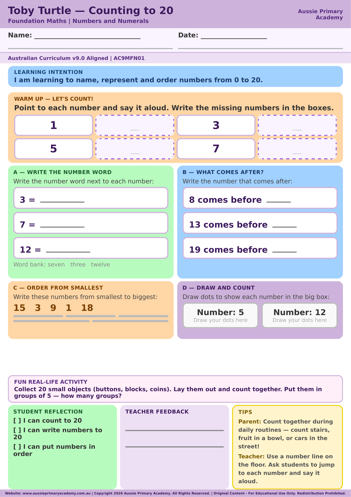

Foundation · Maths · Free Printable
Counting and Comparing Collections to 20
Count, model and compare collections of objects up to 20.
Worksheet Preview

Learning Intention
Students count, represent and compare collections of objects up to 20.
Australian Curriculum
Supports Foundation Maths learning. (AC9MFN03)
Teacher Notes
Use real objects for hands-on counting before moving to pictures on the page.
Skills Practised
- Counting to 20
- Comparing quantities
- One-to-one correspondence
About This Worksheet
This Foundation Maths worksheet gives children practice counting collections to 20 and comparing how many objects are in each collection. The visual focus helps children connect spoken number names with quantities they can see.
What Students Practise
- Counting objects in a collection to 20
- Matching one number name to one object
- Comparing two collections
- Using language such as more, fewer and the same
How to Use It
Before the worksheet, count small groups of everyday objects such as counters, blocks or pencils. Encourage the child to touch or move each object once while counting. Then ask, “Which group has more?” and “How do you know?”
For extra practice, make two collections and have the child count both before comparing them.
Parent Tip
Keep counting practical. Ask your child to count toys, buttons or pieces of fruit, then make two groups and compare them. Encourage complete sentences such as “This group has more because it has 14 and the other has 11.”